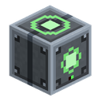
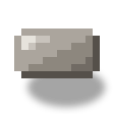

Incubator
alaindustrial:incubator
Summary
The Incubator is a 1×2 multiblock: a squat mechanical base below and a glass dome above. Place any glass (the c:glass tag) on the base and it turns into a volumetric chamber, with the irradiated item floating and spinning inside.
The machine mutates items in three ways: it duplicates (1 → 2), transforms (A → B), or creates a new mod material. Every operation costs EU/FE (LV) and an irradiation charge: one uranium_ingot buys 3 attempts, then burns out into depleted_uranium which settles in the ash slot.
The mode by a mutation chip in a dedicated slot — duplication / transformation / creation. Without a chip the machine does not run; the chip itself is never consumed. The outcome is probabilistic: on success a rarity grade is rolled — Common (70 %) / Rare (20 %) / Epic (8 %) / Legendary (2 %) — which colors the name and grants a bonus to further mutations.
| What it does | How |
|---|---|
| Forms the multiblock | base + any c:glass block on top → dome |
| Mutates items | EU/FE (LV) + a charge (1 uranium_ingot = 3 attempts → 1 depleted_uranium) |
| Mode | chip slot: duplication / transformation / creation |
| Mutation kinds | duplicate (×2), transform (A→B), create (A→new mod item) |
| Rarity | every success rolls Common / Rare / Epic / Legendary (70/20/8/2 %) |
| Slag | 5 % of attempts yield irradiated_slag instead of an empty failure |
Energy
Hybrid model: EU/FE from the grid (LV) plus uranium as the irradiation fuel. Uranium is not destroyed — it becomes depleted_uranium, a feedstock for the future nuclear phase.
| Field | Value |
|---|---|
| EU/FE buffer | 8000 — holds the costliest create operation in full |
| Max input | 32 EU/FE/tick (LV) |
| Consumption | 8 EU/FE/tick while running — four times the machine standard |
| Fuel | 1 uranium_ingot = 3 attempts → 1 depleted_uranium into the ash slot |
Without uranium in the fuel slot an operation will not start; EU/FE is spent only while a cycle runs.
Processing
Duration and cost are tied to the mutation kind. The Incubator is the mod's most energy-hungry LV machine: the floor is 2400 EU/FE per operation versus 200–300 for routine machines.
| Kind | Success chance | Ticks | EU/FE/attempt | On failure |
|---|---|---|---|---|
| Transform | 0.75 | 300 (15 s) | 2400 | input lost, −1 charge |
| Duplicate | 0.45 | 500 (25 s) | 4000 | input lost, −1 charge |
| Create | 0.25 | 1000 (50 s) | 8000 | input lost, −1 charge |
Three outcomes of an attempt:
| Outcome | Probability | What happens |
|---|---|---|
| Success | chance by kind (+ gene bonus, cap 0.95) | result into the output slot + a grade roll |
| Slag | 5 % | input lost, irradiated_slag drops into the output |
| Failure | the remainder | input lost, output unchanged |
Slag is subtracted from the failure, never from the success — the success chance never drops. A grade is rolled only on success (slag is always Common). The outcome is rolled at the end of the cycle: until the last tick the result is unknown and cannot be cancelled by pulling the input.
Grade. On success a rarity is rolled: Common 70 % / Rare 20 % / Epic 8 % / Legendary 2 %. A Common grade leaves no trace — the item still stacks with vanilla. Rare and above write the mutation_grade component and color the name (yellow / aqua / light purple).
The input gene burns. The input item's grade grants its chance bonus (+5 / +10 / +15 p.p. for Rare / Epic / Legendary, the total capped at 0.95) and burns away — the result always gets a fresh grade roll. A Legendary cannot be multiplied via duplicate; it can only be spent for the higher chance.
Inventory
Five slots: chip, fuel (uranium), the item to mutate, the result, and ash. The result and ash slots are read-only for the player; automation into the ash slot is pull-only.
| Slot | Accepts | Behaviour |
|---|---|---|
| Chip | # (3 chips) | 1 item; not consumed; sets the mode; an empty slot means the machine will not run; automation cannot take it out |
| Fuel | # (= uranium_ingot) | 1 ingot is taken the moment it lands in an assembled machine; a charge = 3 attempts |
| Input | items with a mutation recipe in the selected mode | 1 stack; consumes 1/attempt (lost on failure) |
| Result | the mutation result or irradiated_slag | 1 stack; fill-only |
| Ash | depleted_uranium | 1 stack; +1 per exhausted ingot; pull-only |
Interface
The screen shows: EU/FE storage, cycle progress, the irradiation charge (0–3), the five slots and a formed indicator. The energy bar runs down the left edge; the irradiation charge is a vertical column of pips right of the fuel slot, filling from the bottom up. Top row: chip, input, progress arrow, result; bottom row: fuel and ash.
The chip slot is the top left one. While it is empty, the status line names what is missing ("Needs glass on top" → "Needs a chip") and the slot itself shows a translucent hint item: the three chips take turns, because any of them fits and a frozen picture of one would read as "only this one works". The fuel slot hints the uranium ingot the same way, with nothing to cycle — the fuel tag holds only that. Swapping the chip resets the progress of the current operation.
Both halves of the multiblock are clickable: right-clicking the dome opens the same menu as clicking the base.
Block Properties
A two-tier multiblock with deliberately different silhouettes: a heavy mechanical bottom and a light rounded top — not "two cubes stacked on each other".
Base — a full cube with a recessed front panel, an emitter ring along the top face and cooling ports on the sides. While running, an emitter glow rises above it. Dome — a volumetric rounded chamber, placed automatically from any c:glass block. The original glass type is remembered, so: dismantling the multiblock returns exactly your glass — nothing is lost; stained glass tints the dome — 17 colors with no extra recipes: 16 stained-glass dyes plus an uncolored variant. The frame and the spire always stay the casing's dark metal. The irradiated item floats at the center of the chamber and slowly spins; while running — particles and a pulsing glow.
Sound
While running, the incubator gurgles with the nutrient bath under its dome — the loop (pattern A, default 0.35). It falls silent when idle. The gurgle was picked over Geiger ticking out of ten candidates: the irradiation is the method here, not the point, so the machine should sound like something growing rather than like a hazard
Recipes
Base block follows the machine-assembly standard, full 3×3 grid: 1 machine casing + 2 uranium plates + 3 glass + 1 electronic circuit + 2 iron plates. The uranium plates gate entry into the mechanic behind an established uranium chain (ore → ingot → plate).
The three mode chips are crafted from empty_chip plus a thematic filling; a uranium plate in each is the shared "irradiating" element:
| Chip | Recipe | Mode |
|---|---|---|
mutation_chip_duplicate | empty chip + 2 amethyst shards + uranium plate | duplicate |
mutation_chip_transform | empty chip + redstone + lapis + uranium plate | transform |
mutation_chip_create | empty chip + diamond + echo shard + uranium plate | create |
Recipe type — three separate types, one per mode: mutation_transform, mutation_duplicate, mutation_create. Each JSON describes one input → one output with an optional chance override. Fuel is not mentioned in the recipe — uranium is the machine's charge, not an ingredient.
Duplicate — four value classes
The cost of an attempt is fixed (⅓ of an ingot + 4000 EU/FE + 25 s), so the only balance lever is the success chance: the more valuable the item, the lower the chance.
| Class | Chance | Items |
|---|---|---|
| Gems and precious ingots | 0.45 | diamond, emerald, amethyst_shard, gold_ingot, silver_ingot, nickel_ingot |
| Minerals and common ingots | 0.55 | coal, redstone, lapis_lazuli, quartz, glowstone_dust, iron_ingot, copper_ingot, tin_ingot, raw_rubber, rubber |
| Rare organics | 0.60 | nether_wart, cocoa_beans, glow_berries, torchflower_seeds, pitcher_pod |
| Basic crops | 0.85 | wheat_seeds, beetroot_seeds, melon_seeds, pumpkin_seeds, carrot, potato |
Ingots yes, processed parts no. Vanilla and mod ingots are duplicated (iron, copper, gold, tin, silver, nickel) — these are base materials. Anything processed (dusts, plates, casings, circuits, chips, cables, raw ore and ore blocks) is not — it would devalue the crafting chain. Uranium is not duplicated (no recipe).
Rubber is a stated exception. It is a machine product, so by the rule above it should not duplicate. But oil is a finite resource — lakes do not refill and nothing turns water into oil — so without the Incubator the amount of rubber in a world is capped by the deposits you happen to find. Duplication is an expensive renewable route, not a free one: an attempt costs 4000 EU/FE and a third of a uranium ingot at a 0.55 chance, while the same rubber made from fresh oil costs 400 EU/FE. While there is oil left, pumping is ten times cheaper; the Incubator matters once there is not.
. With kok sagyz rubber now has a primary renewable route — the plantation: a root macerates into raw_rubber for 300 EU/FE per unit plus a cheap vulcanization, roughly 700 EU/FE per rubber against ~7273 EU/FE here. The role of incubator duplication is narrowed down to an emergency: uranium already mined, oil gone, no seeds. The duplication numbers are unchanged.
Transform — a horizontal exchange
Like is traded for like. Upgrading by value (iron → gold) is forbidden. All 27 recipes share a 0.75 chance, 300-tick duration and 2400 EU/FE cost. For families with many members (saplings, flowers, soils) a ring is used: each item turns into the next one around the circle until the wanted one comes up.
| Category | Recipes | Ring |
|---|---|---|
| Minerals | 3 | lapis_lazuli ↔ redstone, quartz ↔ glowstone_dust, coal ↔ charcoal (all 1:1) |
| Saplings | 8 | oak → birch → spruce → jungle → acacia → dark oak → cherry → mangrove → oak |
| Flowers | 8 | dandelion → poppy → blue orchid → allium → azure bluet → cornflower → lily of the valley → oxeye daisy → dandelion |
| Soils | 5 | dirt → podzol → mycelium → dirt; sand ↔ red sand |
Create — evolution ladders
An ordinary item evolves into a unique mod material along a three-tier ladder. The higher the tier, the lower the chance and the costlier the operation. From tier 2 onward a failure returns the input intact (only the charge and EU/FE burn) — otherwise no one would risk climbing past tier 1.
| Branch | Tier 1 | Tier 2 | Tier 3 |
|---|---|---|---|
| Diamond — energy density | diamond → irradiated diamond | → diamond matrix | → singularity core |
| Crystal — optics | amethyst_shard → resonant shard | → focusing lens | → prismatic core |
| Biological — agriculture | lapis_lazuli → mutagen dust | → living mutagen | → gene matrix |
| Nuclear — fuel | depleted_uranium → unstable isotope | → enriched core | → isotope concentrate |
| Tier | Chance | Ticks | EU/FE | On failure |
|---|---|---|---|---|
| 1 (vanilla → mod material) | 0.25 | 1000 | 8000 | input is lost |
| 2 | 0.15 | 1500 | 12000 | input returned intact |
| 3 | 0.08 | 2000 | 16000 | input returned intact |
The nuclear branch starts from the Incubator's own ash — spent uranium becomes the entry to a chain rather than waste.
The current release ships only the 4 tier-1 recipes (one per branch): diamond → irradiated_diamond, amethyst_shard → resonant_shard, lapis_lazuli → mutagen_dust, depleted_uranium → unstable_isotope. Tiers 2–3 and upgrade chips from the upper materials come in the next release.
Progression
Tier: LV. Best built after the first machines (macerator/extractor), once you have a stable uranium vein and an EU/FE grid. Introduces 7 new items: depleted_uranium, irradiated_diamond, mutagen_dust, resonant_shard, unstable_isotope, irradiated_slag (a by-product of 5 % of attempts — no consumers in this release, groundwork for the future) and three mode chips. Grade "genes" on materials grant a bonus to further mutation chances (+5/+10/+15 p.p.) — consumers will arrive in future agriculture/nuclear phases. Mutation advancements: first mutation, first create result, first Legendary outcome.
Related
Uranium — the fuel ingot. Nuclear theme — where depleted_uranium goes. Teleporter multiblock — a sibling structural task. Sawmill — the reference machine with switchable modes. Solar panel — the reference for a chip slot driving machine behaviour.
Crafting
Shaped Crafting

▶
Incubator